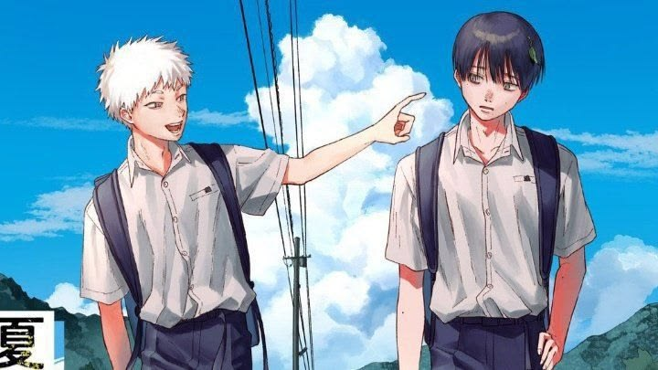

Trailer :
Genres :
- Horreur Psychologique et Surnaturelle
- Drame et Tragédie
- Slice of Life
- Mystère et Thriller
- Shōnen-ai (LGBT ambigu)
Synopsis :
Dans un village rural isolé, Yoshiki et Hikaru sont deux amis d'enfance inséparables jusqu'au jour où Hikaru disparaît en montagne et est retrouvé mort par Yoshiki.
Pourtant, quelques jours plus tard, Hikaru réapparaît vivant, identique en apparence et en souvenirs, mais Yoshiki sait instinctivement qu'une entité étrangère a pris possession du corps de son ami.
Déchiré entre l'horreur de la vérité et l'incapacité de laisser à nouveau partir son ami, Yoshiki choisit de continuer à vivre aux côtés de cet imposteur bienveillant mais inquiétant.
Alors que des événements surnaturels commencent à frapper le village, Yoshiki doit naviguer entre son attachement émotionnel et les menaces grandissantes qui pèsent sur eux deux.
Personnages :
Yoshiki Tsujinaka
Yoshiki Tsujinaka est un adolescent réservé, lucide et mélancolique, qui porte seul le lourd secret de la mort de son meilleur ami. Bien que terrifié par l'entité qui a remplacé Hikaru, son attachement profond et sa solitude le poussent à accepter cette présence étrange pour ne pas être à nouveau seul. Il sert de point de vue humain et rationnel face à l'absurdité horrifique de sa situation, oscillant constamment entre peur et affection.
Hikaru Indo
Hikaru Indo (ou l'entité qui le remplace) est un être mystérieux ayant pris l'apparence, les souvenirs et la personnalité du défunt Hikaru après sa mort tragique. Il se montre protecteur, affectueux et parfois inquiétant, capable de transformations physiques monstrueuses pour défendre Yoshiki ou exprimer ses émotions. Son existence pose la question centrale de l'identité : est-il toujours Hikaru ou simplement un monstre qui l'imite parfaitement ?
Tanaka
Tanaka est un chasseur d'étranges créatures, mystérieux et compétent, qui arrive au village pour enquêter sur les phénomènes surnaturels liés à l'entité « Hikaru ». Portant souvent des lunettes de soleil et affichant un calme imperturbable, il semble en savoir beaucoup plus sur la nature des monstres que les habitants ordinaires. Il agit comme une figure d'autorité externe qui menace l'équilibre fragile entre Yoshiki et son ami imposteur.
Asako Yamagishi
Asako Yamagishi est une camarade de classe de Yoshiki et Hikaru, observatrice et intuitive, qui commence à soupçonner que quelque chose ne va pas avec Hikaru depuis son retour. Elle représente le lien avec la normalité et le reste du village, servant parfois de catalyseur pour révéler les anomalies comportementales de l'entité. Son amitié sincère avec les deux garçons la place dans une position délicate face à la vérité qu'elle pressent.
Anime :
Saison 1 :
12 épisodes
Manga :
Nombre total de tomes : 8 (France), 9 (Japon)
Statut : toujours en cours de publication
Auteur : Mokumokuren
Note :
9.5/10
Commentaire :
Trop banger ! Et la fin de la saison 1, incroyable ! J'AI BESOIN DE LA SUITE !.